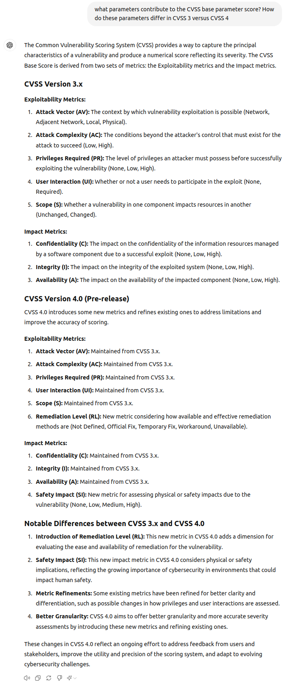

NotebookLM Vulnerability Standards¶
Overview
In this chapter, we'll feed the main vulnerability standards to NotebookLM.
Data Sources¶
These files are available in docs/NotebookLM/InputDocs for convenience.
Data Sources
The vulnerability standards PDFs are available in https://github.com/CyberSecAI/CyberSecAI.github.io/tree/main/data/NotebookLM_VulnerabilityStandards

CISA KEV was then loaded as a text file.
Quote
write an introductory article in less than 250 words that gives an overview of all these sources and how they fit together

Each circled-number is a clickable link to the reference text in the original sources.
I want to rank vulnerabilities by Exploitation¶
Quote
I am currently using CVSS to rank vulnerabilities. I also want to rank based on exploitation as I heard only a small percentage of CVEs are actually exploited. What standard should I use. How should I use them. Provide an answer with rationale and examples.

Explain risk like I'm a 5 year old¶
Quote
I want to prioritize vulnerabilities by risk. But I don't understand risk and the components or factors of risk. Can you explain that to me like I'm a 5 year old. Then explain how I can use that for my risk based prioritization approach. Please provide a rationale

CVSS Base Parameters for CVSS v3 and v4¶
Quote
what parameters contribute to the CVSS base parameter score? How do these parameters differ in CVSS 3 versus CVSS 4

ChatGPT4o Response¶

Failure
Hallucination Remediation Level (RL) is NOT part of the Exploitability Metrics
Quote
Remediation Level (RL): New metric considering how available and effective remediation methods are (Not Defined, Official Fix, Temporary Fix, Workaround, Unavailable).
ChatGPT4o Check Response¶

Takeaways¶
Takeaways
- NotebookLM does a good job assimilating these verbose standards and was competently able to answer specific factual questions, and broader opinionated questions.
- Lots of references to the source material were provided in the answers which help understand and validate the answers.